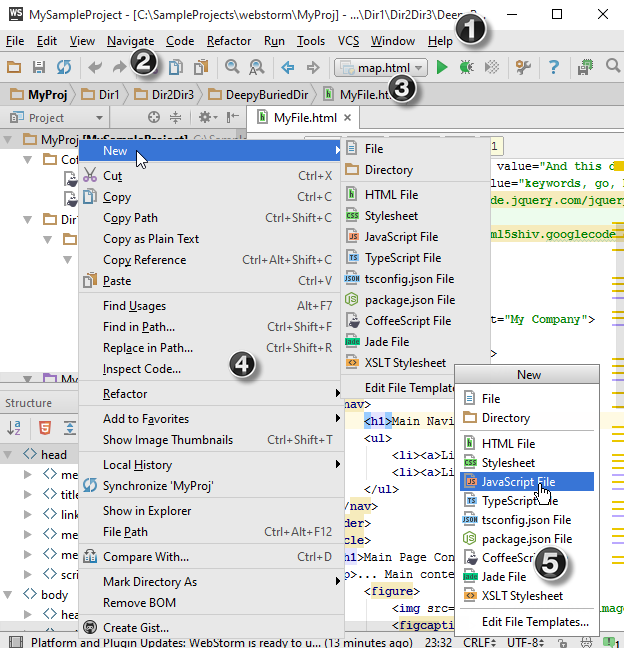
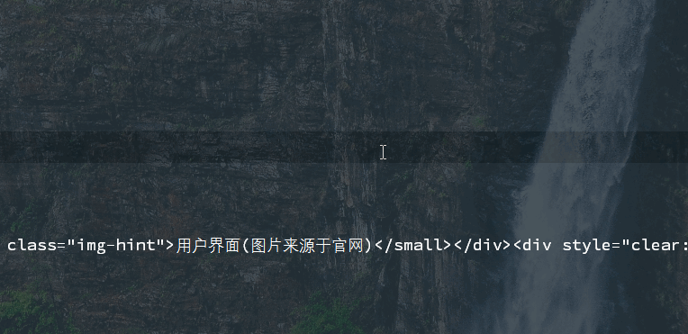
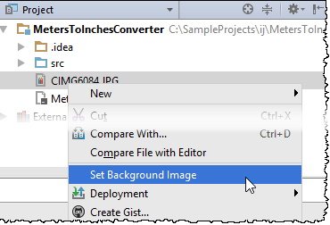
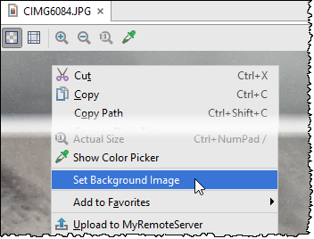

好吧，我又回归WebStorm了
User Interface
主要界面

1——主要菜单
2——菜单工具栏
3——导航栏
Alt+Home在编辑区域弹出，Esc退出

4——上下文菜单(即本项目菜单)
右键项目名称弹出
5——弹出菜单
Alt+Insert在编辑区域弹出
可以通过Main-Menu->View 来控制面板是否显示
可以通过Ctrl+Shift+A对要做的操作进行搜索
显示
如何调整视图模式？
可以在主菜单中View——>Enter full screen mode/Enter presentation mode/Enter distraction-free mode
当然也可以去keymap中去设置这三种模式的快捷键
如何设置背景图片？
平时写代码或者写博客，背景一般都是黑色，觉得有些乏味，WebStorm中可以自定义背景图片，透明度，填充方式及摆放位置，五星好评！
设置方式:双击Shift调出Search Everything搜索set back...即可调出设置界面
当然，也可以右键点击项目中的图片或者在图片编辑器中设置:


Editor
如何查找打开文件历史?
Ctrl+E查找最近使用文件
Ctrl+Shift+E查找最近修改文件
如何在新窗口中打开一个文件?
1.直接拖拽文件上面的Tab栏到编辑器区域外面
2.在已打开文件中Shift+F4
3.在项目工具栏窗口Shift+鼠标双击目标文件
如何关闭文件?
1.关闭当前文件之外的所有文件
Alt+单击Tab栏当前文件叉号
2.关闭所有未pinned的文件
Ctrl+F4
如何pin一个文件?
右键Tab栏选择Pin Tab
如何选中文本?
1.选择当前位置到本词开始或结束的区域
Ctrl+Shift+—>/<-
2.选择当前位置到本/kbd>+的区域
双击Ctrl后并按下Home
3.选择当前位置到当前编辑区域开始或结束的区域
Ctrl+Shift+Page Up/Page Down
4.多列选择文字
按住Alt鼠标拖拽；
按住鼠标中键拖拽
5.扩展/收缩选择
Ctrl+W 扩展
Ctrl+Shift+W收缩
6.多重选择
1.选择某个片段，多次按下Alt+J，选择匹配到的文字
2.按下Alt，用鼠标多选片段
如何编辑文本(剪切，复制，粘贴)？
1.复制当前行文本到下一行
Ctrl+D
2.复制当前文件绝对路径
Ctrl+Shift+C
3.复制当前行的路径
Ctrl+Shift+Alt+C
4.复制模式
有两种模式，一种是简单模式，即光标在哪儿就复制到哪儿Ctrl+Shift+Alt+V
另外一种模式，会智能格式复制位置Ctrl+V
5.选择复制历史片段
可以选择曾经复制过的片段，不过有存储数量限制，默认是五个
Ctrl+Shift+V
6.拖拽文本
直接拖拽相当于剪切文本到目标位置；
同时按下Ctrl再拖拽相当于复制文本到目标位置
如何注释文本?
单行注释 Ctrl+/
多行注释 Ctrl+Shift+/
如何回退重做？
Ctrl+Z回退
Ctrl+Shift+Z重做
``
更高级的文本用法
1.增加一行
Shift+Enter在当前行下面插入一行
Ctrl+Alt+Enter在当前行前面插入一行
2.移除当前行
Ctrl+Y
3.移动当前行
Shift+Alt+Up/Down
4.移动当前段落
Ctrl+Shift+Up/Down
5.左右移动当前段落(比如移动某个属性键值对顺序)
Ctrl+Shift+Alt+Up/Down
6.代码折叠
Ctrl+-/+
7.按照设置格式化代码
Ctrl+Alt+L格式化本区域代码
Ctrl+Alt+Shift+L格式化整个文件(会弹出对话框)
8.大小写切换
Ctrl+Shift+U切换选择文本的大小写状态